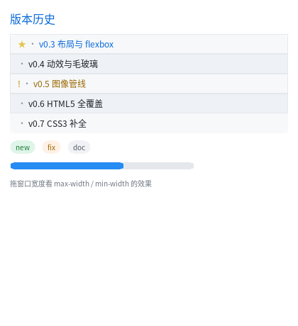

CSS3 补全：真实页面天天用的那几件

完整程序：example/14_css3/main.c
这一章讲 2026-11 补进本库的一批 CSS 能力。它们都不是"高级特效"， 而是写真实页面绕不开的东西 —— 缺了就得手工加 class、手工算颜色、手工插图标。
| 能力 | 不补的时候有多难受 |
|---|---|
::before / content |
每个图标都要多写一个 <span>，HTML 立刻变脏 |
:nth-child(2n) |
斑马纹要手工给每行加 class="odd"/"even" |
[data-*] |
状态样式没法按数据属性写，只能再加 class |
min-width / max-width |
窗口一窄，卡片被压成一条；一宽，又拉得难看 |
!important |
被别处的规则覆盖时没有兜底办法 |
hsl() |
配色要在脑子里做十六进制换算 |
1. ::before / ::after：构建期变成真节点
.row::before { content: "• "; color: #8B949E; }
.row:first-child::before { content: "★ "; color: #E6C34A; }
本库的做法是在构建期把它展开成一个真节点（不是运行期"假装有个伪元素"）：
<div class="row"> → <div class="row">
<span class="__pe_0">★ </span> ← 生成的
<span>v0.3 布局与 flexbox</span>
</div>
所以：
- 运行期完全不知道有伪元素，零成本、零分支；
- 它和普通节点一样参与布局、继承样式、被脏区覆盖；
- 用户的选择器匹配不到它（内部 tag 是
#pe，标签名不可能以#开头）。
三条必须知道的规则：
- 必须写
content，否则报错：::before 规则缺少 'content'。 （浏览器是"没有 content 就不生成"，本库改成报错 —— 少一个"为什么没出来"的排查。） - 只支持纯文本：
content: "★ "可以，content: attr(x)/counter()/url()报错。 content用在普通元素上直接报错（'content' 只能用在 ::before / ::after 上）。
::before 插在第一个孩子位置、::after 追加到末尾；两者都不是"元素兄弟"，
所以不会影响 :first-child / :nth-child 的计数。
2. 结构伪类：斑马纹一行搞定
.row:nth-child(2n) { background-color: #EEF2F7; } /* 偶数行 */
.row:last-child { border-color: #F6F8FA; } /* 末条不画分隔线 */
.row:first-child { color: #0969DA; } /* 首条强调 */
支持的式子：N、odd、even、an+b、-n+b（只算元素兄弟，文本节点不算）。
同类还有 :last-child :only-child :first-of-type :last-of-type
:only-of-type :nth-of-type() :nth-last-child() :nth-last-of-type()
以及 :not(...)：
.tag:not([data-kind]) { color: #57606A; } /* 没有 data-kind 的那些 */
:not() 里只放一个简单选择器（tag / .class / #id / [attr]），不支持嵌套。
3. 属性选择器
.row[data-state=warn] { color: #9A6700; }
.row[data-state=warn]::before { content: "! "; }
.tag[data-kind=new] { background-color: #DFF5E9; }
支持 [a]、[a=v]、[a^=v]、[a$=v]、[a*=v]、[a~=v]；
属性名自动转小写，值做 HTML 实体解码（data-tip="a&b" 能匹配 [data-tip="a&b"]）。
这条配合 ::before 很有用：状态和图标都由数据驱动，HTML 里不用写死 class。
4. min-width / max-width：窗口变窄不再被压扁
#bar { width: 100%; min-width: 120px; max-width: 260px; }
语义与 CSS 一致，关键在用哪个盒：
box-sizing |
min/max-width 指 |
|---|---|
content-box（默认） |
内容盒宽度（不含 padding / border） |
border-box |
边框盒宽度（含 padding / border） |
百分比相对父元素内容盒；min-height / max-height 同理。
两个都是 px 且 max < min 时构建期报错（max-width(120px) 小于 min-width(200px)），
不给你一个"到底听谁的"的悬念。
5. !important 与 inherit / currentColor
.hint { color: #6E7781 !important; } /* 别的规则再想改也改不动 */
实现方式是级联两趟：普通声明先全部应用，带 !important 的再应用一遍。
所以你不用记"优先级三元组怎么算"——!important 永远赢，!important 之间仍按特异性比较。
.a { border-color: currentColor; } /* 跟随自己的 color */
.b { color: inherit; } /* 显式继承（本来就是默认） */
.c { color: initial; } /* 回到初值 */
6. hsl() 配色
#fill { background-color: hsl(210, 90%, 55%); }
hsl(h, s%, l%) / hsla(h, s%, l%, a)，h 可以带 deg，可以负数（自动取模）。
s / l 是百分数。这样调色只改一个数（色相），不用手算十六进制。
7. 一条红线：关键帧里不能改 width
/* ✗ 构建期报错：@keyframes 里不支持的属性 'width' */
@keyframes grow { from { width: 20%; } to { width: 92%; } }
/* ✓ 只能改绘制属性 */
@keyframes pulse {
from { background-color: hsl(210, 90%, 55%); }
to { background-color: hsl(150, 70%, 42%); }
}
允许的键帧属性只有一组：background* / opacity / transform / color /
border-color / border-radius / clip-path。
理由是本库的红线 —— 动画零重排：改宽度意味着每帧重新计算布局，
那就不再是"只重绘脏区"了。
8. 还没做的（别去试）
这一篇写的是 B2（选择器）。B3/B4/B5 后来都落地了 —— em/rem/calc()、
四角 border-radius、border-style: dashed、letter-spacing、text-overflow
现在都能用，见 18. CSS3 补全收官。
截至今天仍然会报错的：
| 想写 | 现在会得到 | 为什么 |
|---|---|---|
::first-line / ::first-letter / ::marker / ::selection |
不支持的伪元素 |
都要改"逐行排版"本身，或依赖运行期选区状态 |
content: attr(x) / counter() |
报错（只支持纯文本） | 等于引入一个小运行期求值器 |
:nth-child(2n+1 of .a) / :empty |
报错 | 前者是 L4 语法，后者判据便宜但暂未排期 |
filter: blur() / brightness() 等 |
不支持的属性 |
blur() 要"元素自己离屏后再模糊"，与 rotate 同级 |
transform: rotate() / skew() |
只支持 translate()/scale() |
要旋转光栅路径（CPU 仿射 + GL 顶点 + 字形旋转） |
text-align: justify |
报错 | 要改行内分配算法（布局/绘制共用的一份实现） |
box-shadow: … 0 0 4px 6px C（spread） |
报了但不生效 | 阴影的展开半径 |
border-radius: 10px / 20px（椭圆角） |
暂不支持 |
要改两套 SDF |
font: 12px/1.5 MONO |
不支持的属性 |
目前要分开写 |
transition-delay / clip-path |
不支持的属性 |
未排期 |
完整清单与原因见 CSS3 覆盖与裁剪。
9. 下一步读什么
- 18. CSS3 补全收官 ——
:disabled/:checked、文本细节、背景图 - 与 Web 的差别 —— 哪些东西是故意不支持的
- CSS3 覆盖与裁剪 —— 按模块穷举 + 五批计划 + CSS 能力包
- HTML5 标签覆盖与裁剪 —— 标签侧的同一套口径
单位与居中：em / rem / vw / vh / margin: auto
照搬真实页面时最常撞的两件事，现在都支持了。
.card { padding: 1em; } /* 相对**元素自己的**字号 */
.page { max-width: 60rem; } /* 相对**根元素**字号 */
.hero { height: 40vh; } /* 相对视口高度，窗口缩放自动跟着变 */
.box { width: 320px; margin: 0 auto; } /* 横向居中 */
/* 单条边也可以写 auto */
.sidebar-right { margin-left: auto; } /* 靠右 */
| 单位 | 何时解析 | 说明 |
|---|---|---|
em |
构建期折成 px | 相对元素自己的 font-size（继承来的也算） |
rem |
整棵树走完后折成 px | 相对根元素字号 —— 根的 font-size 自己也可能是 em，所以留到最后一趟 |
vw / vh / vmin / vmax |
布局期 | 视口尺寸只有布局时才知道；vmin/vmax 取短边/长边 |
% |
布局期 | 相对父容器内容宽（margin / padding 的百分比不支持） |
margin: auto 是布局概念：横向把剩余空间分掉（两边都 auto 就平分，
只剩一边 auto 就全给它）。所以它只对块级盒有效 —— 行内盒的宽度由内容决定，
没有"剩余"可分配。纵向 auto 按 0 处理：本库还不做外边距合并，单独实现一套
纵向居中容易和它打架，宁可明确不做。
<div class="page">
<div class="box">320px 宽，水平居中</div>
</div>
顺带一提 aspect-ratio（缩略图、卡片封面都用得上）：
.thumb { width: 200px; aspect-ratio: 16 / 9; } /* 高 = 200 × 9/16 = 112 */
.cover { height: 180px; aspect-ratio: 16 / 9; } /* 宽 = 180 × 16/9 = 320 */
它只补缺的那一边：宽高都写了具体值时以具体值为准（与 CSS 一致）。